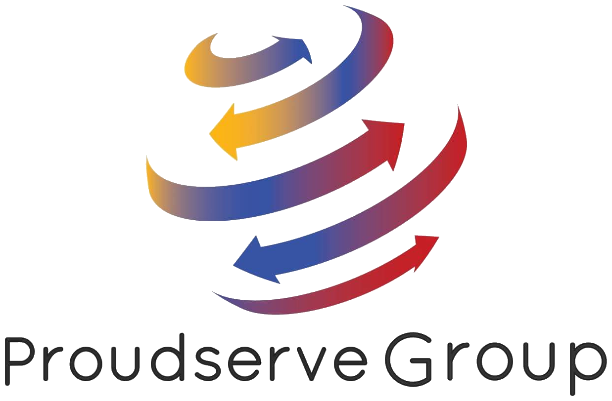

x = independently organized TED event
TEDx is an event formed on a community-by-community basis, where local gatherings are organized to hear idea-focused performances. TEDx encourages speakers to discuss a range of issues and
to cultivate an inspirational environment. TEDx events are planned and coordinated independently by local volunteers, which makes every event unique and from the heart. Just like TED, TEDx strives to nurture inspiration, learning
and to provoke conversations that matter, in a suite of short talks. The events are not organized with an emphasis on any commercial, religious or political agenda. Moreover, TEDx does not focus solely on entrepreneurship, technology
or business - the aim is to promote diversity as well. Another aim of TEDx is to provide a platform for individuals who often do not have one. This means that a TEDx event is not a platform for professional or motivational speakers.
Overall, the goal of TEDx is to spark connection, conversation and community.
TEDxYouth is an event held by the youth, adults, or both. Here, the youth finds an opportunity to raise any topic that is interesting to kids and the youth. However, the youth can, of course, present other subjects! The size of the event has to be up to 100 guests. The main target audience of a TEDxYouth event are young people from local communities, but this does not limit the audience to young people only. The themes for the TEDxYouth events should be broad, featuring a diversity of topics and speakers from various disciplines. Similarly to TED, TEDxYouth aspires to motivate and open up doors to influential conversations and debates among the youth!
We are the first ever TEDxYouth event in Cyprus, organized thanks to the initiative of the IMS Private School. Our team consists entirely of young adults and as a community-based event we aspire to host an event where the youth of all genders and nationalities in Cyprus has a chance to express themselves and spread ideas that are beyond everyday considerations.
Back in 2019, at our first meeting, the six of us started discussing our theme. We needed something that would encourage our speakers, instead of limiting them. We needed something abstract, but not too vague because we know how overused titles can sound/be sometimes. “Beyond” sounded fresh, modern and dreamy. When you’re young, you can’t help but wonder what is going to follow school and adolescence. And we can’t think of a lot of things that are more exciting than what is yet to come and be explored! Thanks to TED and other platforms like it we’ve got a chance to discover something that is beyond the usual for us, beyond the challenges we all face, even beyond our own understanding. And that’s how it came to us. Everyone needs an opportunity to learn about the things that we see every day, as well as to speak about their problems, the things they are passionate about and their beliefs on a deeper level. Our theme seems to capture everything: our excitement to know more, our aspirations and our hopes for the future. We hope our theme will unite remarkable speakers and ideas.
TED is a non-profit global speaking platform, where creative individuals unite in their mission to spread ideas, discuss global issues and express their opinions. Here, inspired thinkers are free to share their knowledge and understanding of the world.
Founded in 1984, TED was the brainchild of Richard Saul Wurman, who cooperated with Harry Marks. In 1990, the TED Conference became an annual event in Monterey, California, attracting a vast and open-minded audience from many disciplines. Given the growing attendance, the years of 2001-2006 witnessed an expansion of the TED family - TEDGlobal (a newly created conference), the TED Prize (winners are granted one wish to change the world), TED Talks (TED content is released online). Once influential minds united and helped to create the conditions necessary for the spreading of ideas, 2012 marked the year of one billion video views of TED Talks. To this day, TED Conferences and Talks continue to inspire, motivate and thrill attendees.
TED provides short but powerful speeches (not more than 18 minutes long) which cover a vast amount of topics - from science to global issues, and many more. TED’s foremost aims are to foster a friendly and learning community and to change attitudes, lives and the world with the power of ideas. These aims are achieved through free TED Talks videos, TED Conferences, free TED Fellowships and TED-Ed video lessons. TED Talks on the web are available for free and are translated to many different languages, giving a brilliant opportunity for ideas to be heard and seen worldwide.
Mariana
My name is Mariana. I write or edit texts for most of our media. I also come up with ideas that make others question my mental health and talk too loud sometimes. And yeah, I do theatre which means I’ll do anything for attention.
Ksenia
I'm Ksenia and I'm responsible for media creation in our marketing team. I love taking pictures of the things and the people that inspire me, playing board games and taking on more than I can ever realistically manage.
Jess
My name is Jess and I’m the Volunteers lead. I love being busy and helping about, especially when it concerns our environment and community. I learn a lot about the environment while being a scout!

Nadia
I’m Nadia and I’m the lead in finance. I love listening to and playing music of all genres, drawing the beautiful moments in life and helping people!

Kat - Co-organizer
My name is Kat and I am the “adult” co-organizer of the event. My hobbies include consuming coffee (a lot of it) and reading books. I’m always trying to learn new things (which I'm hoping to do through participating in this event) and I’m open for discussion on literally any topic.
Eleftheria - Lead Organizer
Hey, I’m Eleftheria, but you can call me Ria. I am the lead organizer as I consider myself to be responsible; if they tell you otherwise they might know something I don’t or are lying. I am really intrigued by human behavior and understand body language as I consider that one of the languages I speak.
The photographs in the background were kindly provided by Elias Tilavgis
The photographs of the team were taken by Irene Floridou
Most graphic design here and on our social media was done by Sofya Fedkina
The website was designed by Daniel Pancake
Julia Avgousti
Ioanna Antoniou
Anna Akinshina
Varvara Babarykina
Yaraslava Dudkina
Sofia Elizarova
Joss Holroyd
Anastasia Kourtseva
Eleni Liassou
Kristina Nikitina
Yulia Pavlovska
Mark Sloutsky
social media
media creation
backstage
media creation
content creation
content creation
technology
content creation
finance
content creation
content creation
media creation
Svaleno Properties was founded in 2008 by Mr. Avgoustinos Louca, who envisioned creating a trustful, solid, self-funded company and at the same time combining quality and affordable prices. Svaleno Properties means more than just securing financial collateral. It is about creating a trusted partnership that will bring you continued prosperity. Focused on working with the best-in-class partners, we provide value to our clients in terms of quality, design, service, support and investment returns.
Baker Tilly South East Europe is a full-service accounting and advisory firm, that offers industry-specialized services in assurance, tax and advisory. Baker Tilly South East Europe is an independent member of Baker Tilly International. Baker Tilly International is one of the world’s leading networks, uniting independent companies to provide top-quality professional services in both international and regional markets.
Proudserve Group Limited is a group of companies, which is involved in the provision of fiduciary, management and administration services relating to companies registered and operating in Cyprus.

Jessica Thackeray: 99156923
tedxyouth.limassol@gmail.com
We are the first ever TEDxYouth event in Cyprus,
organized thanks to the initiative of the IMS Private School.
Website was made by danielpancake ♡( ◡‿◡ )
©2020 TEDxYouth@AgiouAndreou. This independent TEDx event is operated under licence from TED.
You could help by joining the team of volunteers. Your job could be anything at all:
Get in touch with us on social media or via email and take part in organising a TEDxYouth conference this fall.